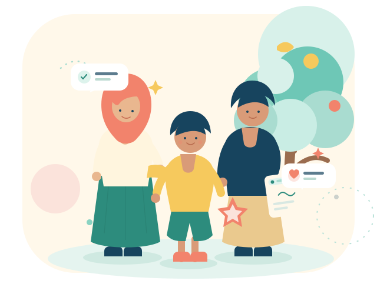

Catat dengan rapi
Setiap kejadian tercatat lengkap: siapa, kapan, jenis pelanggaran, dan apa yang terjadi.
- Jenis & pengurangan poin
- Keterangan kejadian
- Riwayat per siswa
Satu tempat untuk mencatat, memahami, dan mendampingi perilaku siswa. Tenang untuk guru, jelas untuk orang tua, dan ramah untuk anak.
Semua data kesiswaan tersusun dalam satu alur yang mudah dipahami. Fokusnya bukan pada hukuman, tetapi pada langkah perbaikan yang jelas.
Setiap kejadian tercatat lengkap: siapa, kapan, jenis pelanggaran, dan apa yang terjadi.
Poin perilaku dan nilai kompetensi tampil berdampingan, sehingga perkembangan anak terlihat utuh.
Teguran dan sanksi bukan akhir cerita. Keduanya menjadi jembatan percakapan antara sekolah dan keluarga.

Kami percaya anak tumbuh paling baik ketika aturan, apresiasi, dan pendampingan berjalan searah. TumbuhBaik menyatukan catatan kesiswaan agar setiap percakapan dimulai dari pemahaman yang sama — bukan asumsi.
Dari pendataan hingga pendampingan, akses disesuaikan dengan tanggung jawab. Tidak ada informasi yang berlebihan, tidak ada langkah yang terlewat.
Mengelola data induk, akun, artikel, dan aset web sekolah.
Mencatat pelanggaran dan memperbarui nilai siswa di kelas binaan.
Meninjau catatan serta menetapkan teguran dan sanksi yang mendidik.
Memantau perkembangan anak, nilai, dan catatan pendampingan.
Kredensial demo untuk setiap peran tersedia di halaman masuk.
Dari catatan kecil menuju pendampingan yang bermakna.
Guru atau PJ mencatat kejadian, jenis pelanggaran, dan keterangannya dengan cepat.
PJ menelaah catatan lalu menetapkan teguran, sanksi, dan langkah pendampingan.
Orang tua dan guru melihat perkembangan poin serta nilai anak secara transparan.
Panduan singkat untuk guru dan orang tua dalam mendampingi anak di sekolah dasar.
Baca di dashboardKebiasaan baik tumbuh dari contoh, pengulangan, dan dukungan orang dewasa di sekitar anak.
Masuk dengan akun demo untuk melihat dashboard, mencatat pelanggaran, menetapkan teguran, dan memantau perkembangan siswa.